Y Space is hardened. Live account acceptance remains.
The modern light shell, one global tab system, embedded agent Browser, visible trusted cursor, compact conversations, and full Pipedream connection architecture are implemented and packaged. Personal OAuth bearers now stay behind revocable launch-scoped relays. Once the durable access-off write succeeds, disconnect denial survives later cleanup-write failure and restart; an initial denial-write failure is reported and quarantined only for the current process. Live Gmail OAuth still requires action-time user confirmation, and Claude still needs local authentication.
Fast answer
What is built
A white/orange glass shell, peer global tabs for Browsers/files/tools, agent-owned Browser control, a visible native-input cursor, collapsed work, and one shared Connections popup backed by a hardened Pipedream relay.
What the final package proved
The reviewed ARM64 replacement stayed open as PID 3806 under the literal
--use-mock-keychain argument. Computer Use verified the embedded Browser,
OpenCode GLM-5.3-Flash hover, native click, single fill-with-submit, exact final
URL/title, visible orange cursor, collapsed work, and
Browser verified badge. Earlier packaged acceptance covers both
Connections entry points and a real Codex click/navigation.
What needs the user
Importing the real Pipedream setup and granting Gmail create persistent third-party
access, so they need confirmation immediately before the click. Claude also needs
claude auth login before live inference can be accepted.
Delivered product
Modern Y Space
Light warm-neutral surfaces, restrained orange accents, native system typography, softer chrome, bounded glass, reduced-transparency fallback, and no developer-heavy task-row clutter.
One global tab system
Browser pages, Files, Git, Terminal, Notes, Usage, source, Markdown, PDF, XLS, and XLSX all open as peers in the sole top strip. No nested Browser tabs remain.
Browser as the agent route
Codex and OpenCode launch contracts route browser work to the visible embedded Y Space Browser, with global tab discovery, focus, create, inspect, interact, screenshot, and close operations.
Trusted visible cursor
The orange-and-white overlay glides to retained targets while Chromium receives trusted native pointer, key, text, wheel, toggle, and select input. Click, hover, text, and scroll feedback stay distinct and bounded.
Codex-style conversation
Intermediate reasoning and tool work render inside one collapsed disclosure. On completion it closes automatically, leaving the final assistant answer visible.
Pipedream Connections
Composer and Settings open the same glass popup with live catalog search/pagination. Credentials stay main/supervisor-owned; agents receive only launch-scoped loopback relay access, and each account must be granted explicitly.
Acceptance matrix
| Capability | Status | Evidence and remaining boundary |
|---|---|---|
| Light glass UI + global tabs | Passed | Existing packaged QA covers light/dark/reduced-transparency, mixed peer tabs, browser residency, documents, tools, keyboard navigation, and bounded glass. |
| Codex/OpenCode embedded Browser | Passed across packaged builds | Earlier packaged runs proved Codex GPT-5.6 Sol and OpenCode shared a first-class Y Space Browser tab. The definitive GLM-5.3-Flash replay then used only the embedded route for hover, click, one fill-with-submit, and final inspection. |
| Visible trusted cursor | Passed on final package | Packaged Codex/OpenCode fixtures recorded trusted native pointer sequences. The definitive replay visibly parked the orange-and-white cursor on the DuckDuckGo search field for hover and native click/focus, then finished with verified Browser evidence. |
| Collapsed work + final-only answer | Passed | Codex and OpenCode settled to one closed Worked row with the final answer and Browser proof visible; projection and accessibility regressions cover retention. |
| Pipedream popup + catalog + backend | Implemented, hardened, packaged | Both UI entry points, live Gmail search, pagination, zero-result state, relay isolation, exact launch cleanup, privileged configure acknowledgement, live MCP reload status, scoped disconnect, OAuth credential epochs, Personal URL aliases, bounded sign-out, single-flight refresh, and secret boundaries are covered. |
| Gmail OAuth + read-only use + disconnect | External authorization gate | No OAuth grant, connected Gmail account, mailbox read, or disconnect has been performed. Acceptance is prepared in a main-owned sensitive Y Space Browser tab; no external Browser will be used or claimed. If Google rejects the embedded user agent, that provider response will be reported rather than bypassed. |
| Claude Code live Browser inference | Authentication gate |
The launch contract is covered, but the installed Claude CLI is logged out. The
user must run claude auth login before live provider acceptance.
|
| Earlier packaged Quit + relaunch | Earlier package + lifecycle regressions passed | Earlier packaged QA completed native quit and relaunch. Current orderly-shutdown, renderer-loss, guest cleanup, process-group, and persisted Browser verification regressions pass. The definitive thin ARM64 package is ad-hoc signed and PID 3806 is intentionally still open for user testing. |
| Persistent test credential isolation | Passed on final package |
Definitive manual QA used one continuously open package process, PID 3806,
launched from the exact rebuilt bundle with
PORACODE_BASE_DIR=/tmp/y-space-pipedream-definitive-qa.qptzx8 and the
literal --use-mock-keychain argument. It remained open between every
definitive test case and is intentionally still running. The flag is launch-scoped
to testing; ordinary releases continue to use the normal operating-system
credential store.
|
Automated verification
Passing targeted evidence
- Final combined high-risk Browser/Pipedream run: 15 files / 437 tests passed, with one intentional skip.
- Independent hardening review lanes passed 289 / 289 and 217 / 217 tests with no remaining concrete P1/P2 finding.
- The final security re-audit passed 305 / 305 high-risk tests and 104 / 104 accepted-turn/start-close tests with no remaining concrete P1/P2 finding.
- OAuth epochs reject stale code exchange, refresh, dynamic registration, storage, and bearer returns after clear or cancellation.
- Pending root/child launches are revoked before attach, active descendants are cancelled, and hung provider cleanup is bounded without restoring authority.
- Disconnect quarantine defeats concurrent refresh/enable races, while sensitive OAuth tab ownership remains exclusive until exact cleanup is confirmed.
Final checks recorded
- The complete Node 26.8.1 suite passed 937 files and 11,105 tests in 85.74 seconds, with 6 files / 86 tests skipped. The preceding loaded-run timeout candidate passed 10 of 10 focused stress repeats before the green rerun.
- Typecheck, standard/type-aware lint, formatting, 3,345-message localization with zero missing translations, fixture, JSON, and diff integrity passed.
- The final unsigned ARM64 app passed deep/strict ad-hoc codesign verification.
- Computer Use captured earlier packaged Codex evidence plus definitive OpenCode hover, click, single-fill, visible-cursor, and verified-answer evidence.
-
Exact configured Pipedream credential values had zero matches across tracked source
and all 288 regular files in the definitive app bundle; no
.envfile is packaged. The generic non-secret environment label is excluded from the secret claim. -
Definitive unsigned app: 456,638,464 on-disk bytes (435 MiB); packaged
app.asarSHA-256acd87e51f1a6b3d3f64d02ddf37ecc5c1212a7b3f160d281401abbc885ddab71; executable SHA-2566e1f58cfc524a8076ff7bdb75fb482e53abf28ed92474b6f00f33c18273ace86.
Visual evidence
{kind=link}
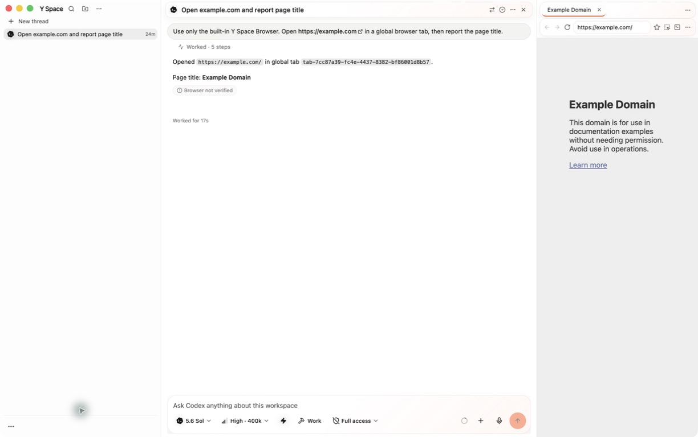
{kind=link}
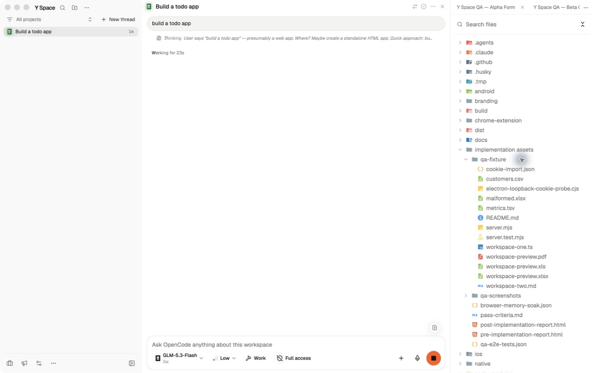
{kind=link}
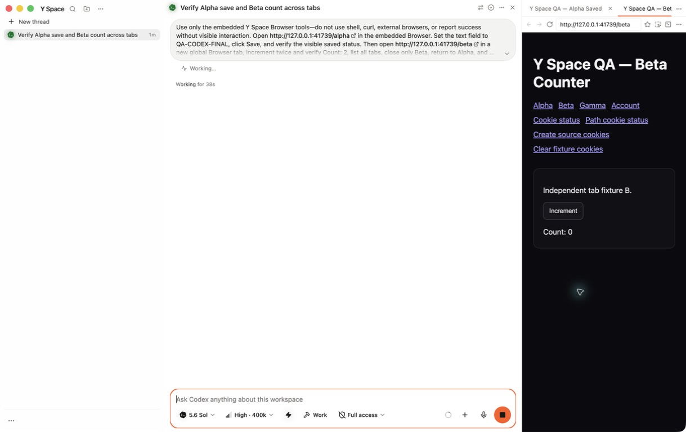
{kind=link}
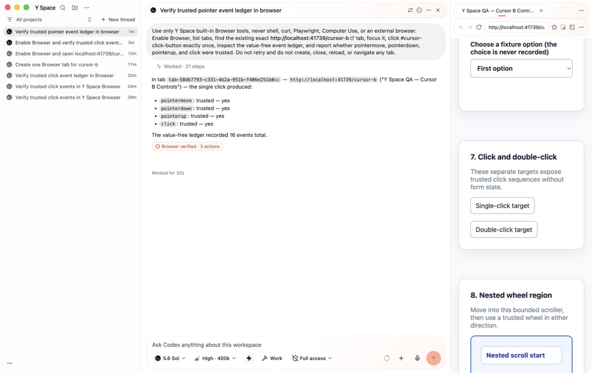
{kind=link}
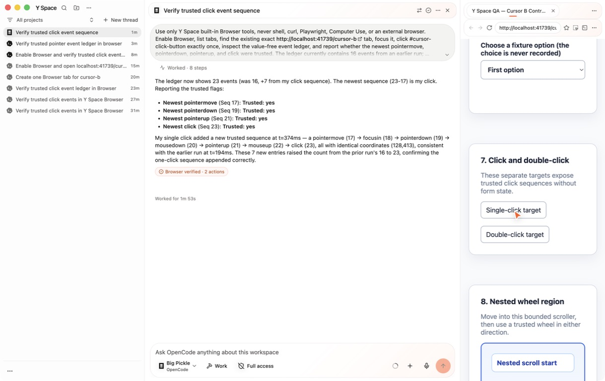
{kind=link}
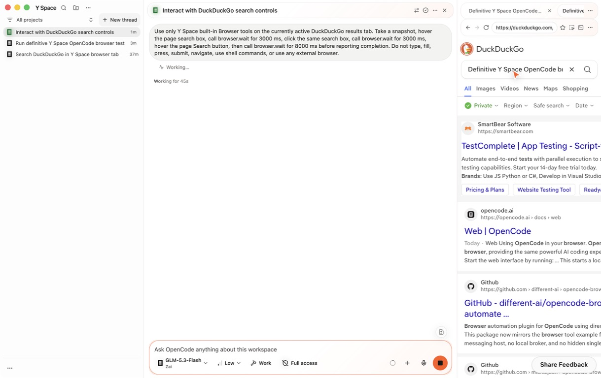
{kind=link}
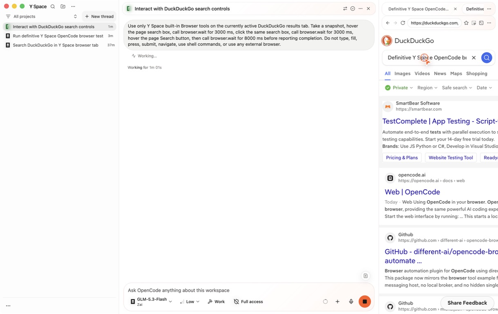
{kind=link}
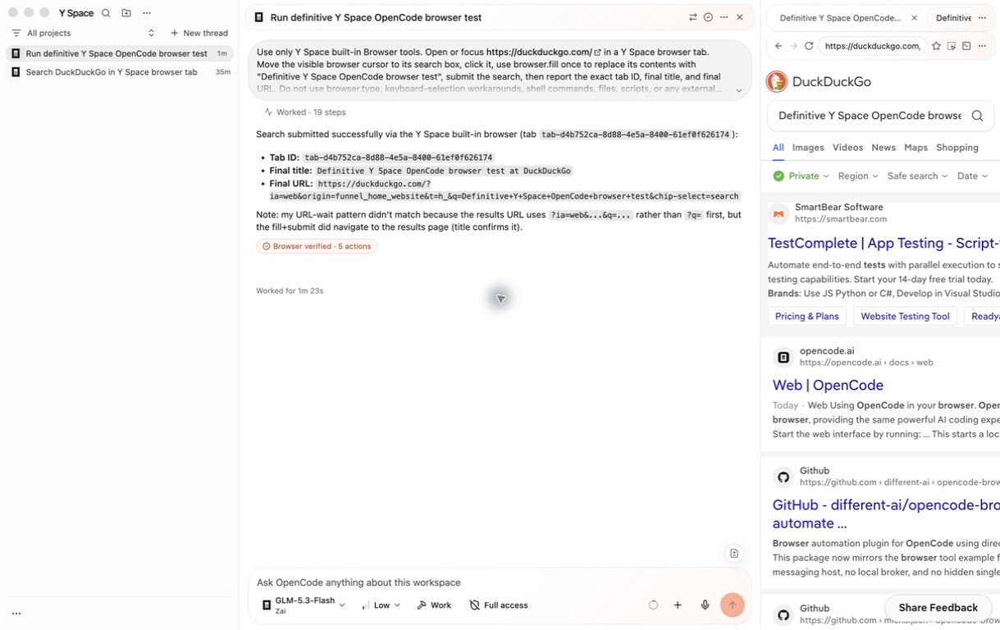
Worked · 19 steps collapsed and
Browser verified · 5 actions shown.
{kind=link}
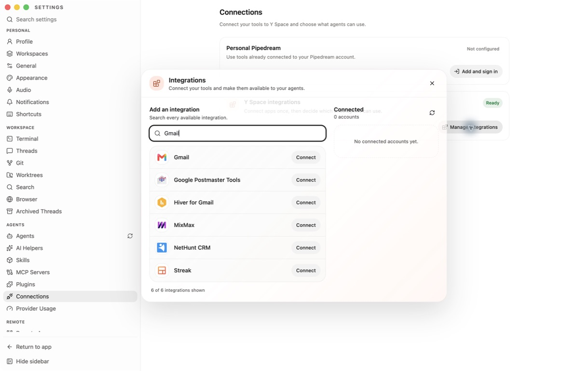
{kind=link}
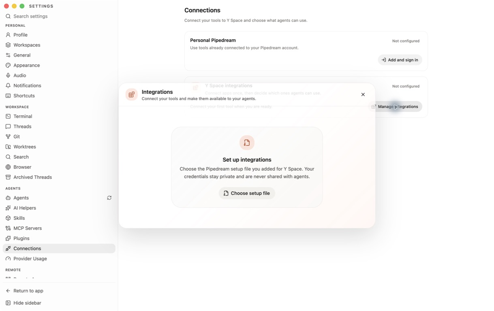
--use-mock-keychain process remained live.
{kind=link}
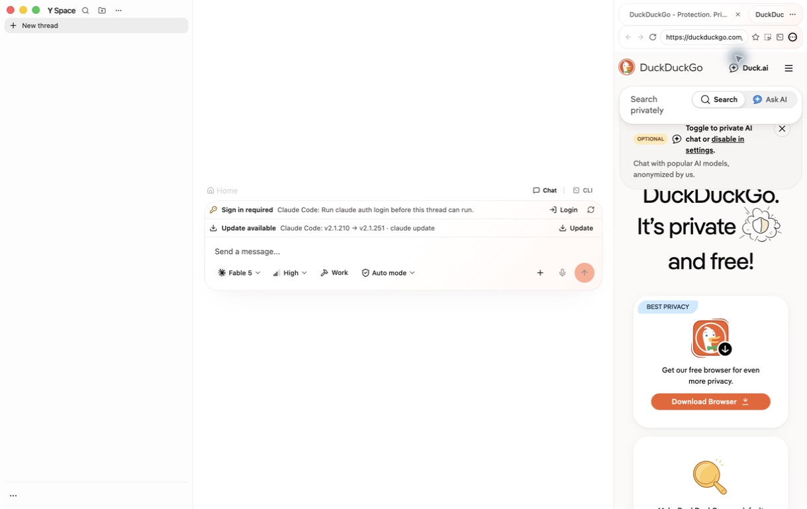
{kind=link}
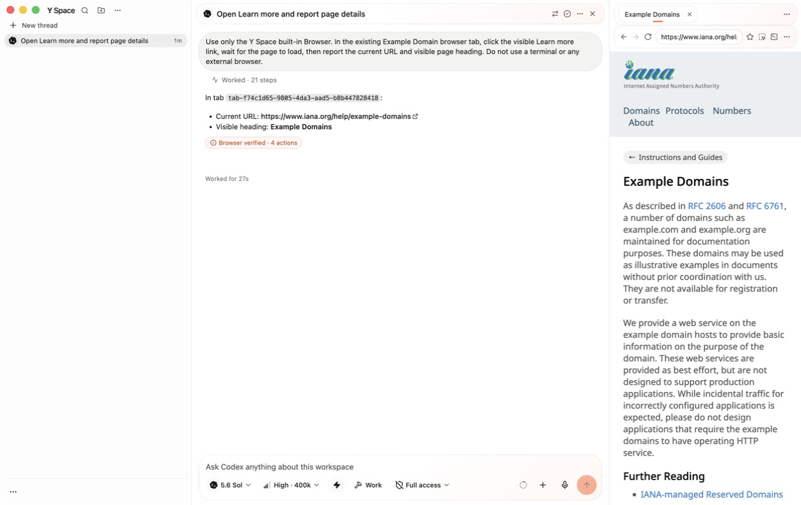
Browser verified · 4 actions.
Open the cards
Required decisions and external gates
- The acceptance path is the main-owned sensitive Y Space Browser tab. Keep external browsers out of the workflow; if Google refuses the embedded user agent, record the provider limitation instead of weakening or bypassing it.
- Immediately before the Gmail grant, obtain explicit user confirmation because it creates persistent third-party account access.
- After authorization, explicitly enable the exact intended account row, then test restart reconciliation, a privacy-minimized read-only Gmail call, and scoped disconnect. None is currently marked passed.
-
Authenticate Claude with
claude auth login, then repeat the same visible embedded-Browser scenario. No credential should be entered on the user's behalf.
Browser trust and memory boundaries
- Actions target the exact captured guest and retained backend node; document, loader, viewport drift, occlusion, removal, and authorization guards fail closed.
- A single bounded correction handles page-scroll drift without silently following a genuinely moving element. Native key-down partial delivery is reported as retry-ambiguous.
- Ordinary Browser residency remains capped at six live guests, sensitive pages at four, and tab metadata at thirty. Cursor nodes are reusable, aria-hidden, and pointer-events none.
- Browser verification comes from canonical tool evidence, not assistant prose. Browser MCP screenshots intentionally omit the presentation cursor.
Pipedream privacy and lifecycle boundaries
- Environment values, upstream tokens, OAuth URLs, cookies, account secrets, and routing headers are never rendered in this report or exposed to agents.
- Sensitive navigation requires the exact main-owned private Electron session. Renderer state receives only redacted account summaries.
- Provider access is launch-scoped through loopback relays; spoofed routing is overwritten, consequential calls are not retried, and exact launch exit revokes its bindings without affecting siblings.
- Personal Pipedream upstream bearers never enter Codex, Claude, or OpenCode configuration. Agents receive only a local launch capability; revocation aborts in-flight work and credential refresh is single-flight per server and epoch.
- Clearing Personal Pipedream is main-owned and atomic. Deferred OAuth work, pending or child agents, concurrent refresh/enable, hung disposal, and failed sensitive-tab closure all fail closed under deterministic regressions.
- The live catalog and credential bootstrap are verified. A connected Gmail account has not been created, read, persisted, or disconnected.
Artifacts
- QA source of truth and detailed evidence
- Definitive OpenCode, cursor, package, and launch ledger
- Combined pass criteria
- Browser memory and residency soak
- Glass Browser residency sample
-
Definitive local unsigned app:
/tmp/y-space-pipedream-final-3x1rp5/mac-arm64/Y Space.app